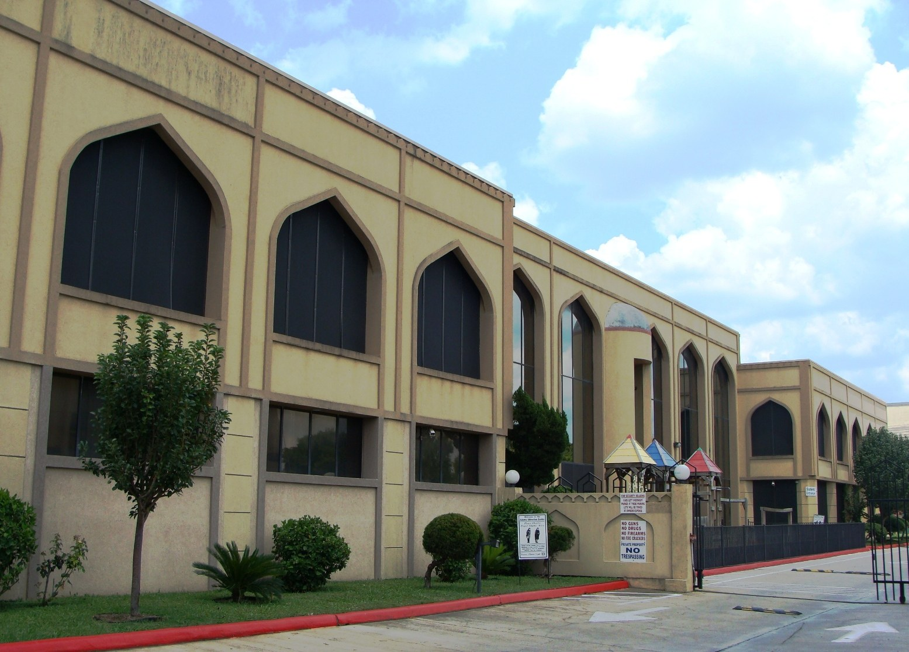

На фоне усиления антишариатской политики в Техасе мусульмане готовятся к выборам
Накануне промежуточных выборов в США республиканцы Техаса предлагают криминализовать пропаганду шариата и лишать гражданства и депортировать её сторонников. В ответ мусульманская община регистрирует избирателей и выдвигает десятки кандидатов.

Накануне промежуточных выборов в США 3 ноября 2026 года в Техасе усилились политика и риторика, направленные против мусульманской общины. Пока власти штата призывают запретить шариат, мусульмане в ответ повышают политическую активность — регистрируют избирателей и выдвигают собственных кандидатов.
Политика «запрета шариата»
В июне 2026 года Республиканская партия Техаса на съезде приняла приоритет под названием «Don't Sharia My Texas». Платформа объявляет шариат «подрывным» и «конкурирующим врагом» конституций штата и страны и призывает признать его пропаганду или внедрение преступлением, не допускать его сторонников к государственной, военной и правоохранительной службе, а также просить федеральное правительство лишать их гражданства и депортировать. На республиканских праймериз в марте 2026 года консультативный вопрос «Должен ли Техас запретить шариат?» поддержали 95% голосовавших.
Кокусы
В марте 2026 года депутат штата Брент Мани (Гринвилл) создал кокус «Sharia-Free Texas»; среди учредителей — депутат Кэрри Айзек (Дриппинг-Спрингс). По данным Al Jazeera, в кокусе 38 членов из 150 мест палаты штата. Ранее техасские конгрессмены Чип Рой и Кит Селф создали в Конгрессе кокус «Sharia-Free America» — 68 республиканцев из 25 штатов по состоянию на июнь 2026 года. Брент Мани назвал шариат «угрозой, поскольку он открыто претендует на верховенство над всеми человеческими законами, включая Конституцию США».

Меры властей
Губернатор Техаса Грег Эбботт пообещал полный запрет: «Мы не ждём Вашингтон. Мы полностью запретим шариат в Техасе», — заявил он. Эбботт объявил Совет по американо-исламским отношениям (CAIR) террористической организацией, а генеральный прокурор штата Кен Пакстон подал иск с требованием прекратить её деятельность в Техасе. Ранее Эбботт грозил лишить финансирования аэропорты Далласа–Форт-Уэрта и Хьюстона из-за комнат для омовения. Сенатор США Тед Круз заявил: «Шариат в корне несовместим с Конституцией, и мы должны вместе остановить его прямо сейчас».
Ответ мусульман
Мусульмане составляют около 2% населения Техаса — примерно 300–500 тысяч человек в штате с населением 32 миллиона. Исламское общество Большого Хьюстона управляет более чем 30 мечетями. Накануне выборов мечети Хьюстона стали центрами регистрации избирателей; по словам лидеров общины, еженедельно регистрируется около 1000 человек. Мечеть в Фриско провела мероприятие «BBQ and Ballots».
Кандидаты на выборах
По данным Muslim Network TV, на промежуточных выборах 2026 года баллотируются не менее 51 мусульманина-американца примерно в 23 штатах, больше всего — в Миннесоте (8), Мичигане (6) и Техасе (4). Хьюстонский стоматолог Летиция Пламмер в случае победы станет первым мусульманином — главой округа в Техасе и на американском Юге. Депутат штата Салман Бходжани (Юлесс), первый мусульманин, избранный в Легислатуру Техаса, сказал о шариате: «Это личный нравственный кодекс, и я не могу навязывать его кому-либо». Кандидат в Сенат от Мичигана Абдул Эль-Сайед в случае победы может стать первым мусульманином-сенатором США.